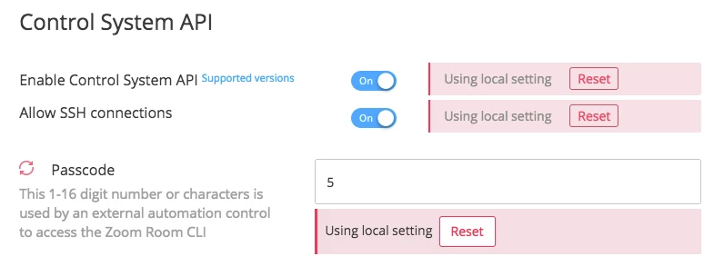
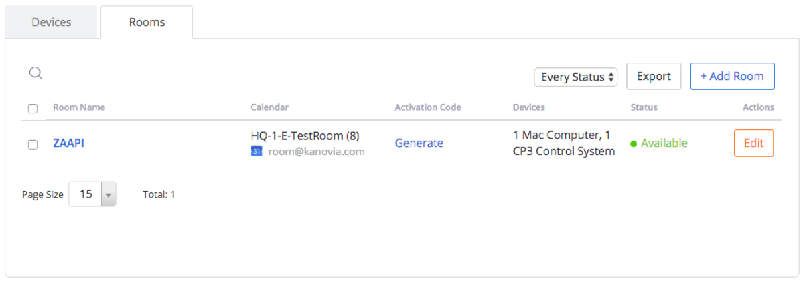
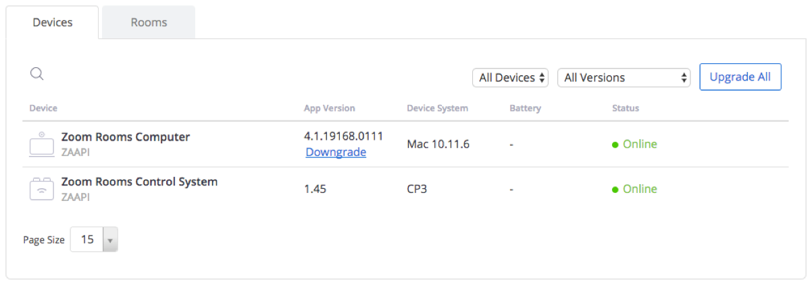

Zoom Rooms Control System API
Version 1
The ZR-CSAPI is a stand-alone process that runs on the Zoom Room machine. The process exposes an SSH interface that accepts a CLI terminal connection from an external automation controller. The ZR-CSAPI then connects to the Zoom Room process via a proprietary Zoom Room API. The ZR-CSAPI translates the SSH CLI commands from the automation controller to the proprietary Zoom Room API commands for the Zoom Room. Features of the ZR-CSAPI :
· The CLI feature set is detailed in the Command reference document.
· Version 1 will run on the Mac Zoom Room only. A version that runs on the PC Zoom Room will follow.
· It supports SSH only, via port 2244. It supports a single SSH connection at a time. Also, the standard Zoom Room Controller (iPad / Android tablet) cannot be connected to the Zoom Room simultaneously while ZR-CSAPI is running.
· It will not support an RS-232 connection. RS-232 support will likely not be added in future versions.
· For interactive terminal command line editing, ZR-CSAPI supports Arrow up/down/left/right, Del, and Backspace.
· The CLI can return either CLI-style reply text, or JSON reply structures.
Because the automation controller needs to connect to the Zoom Room over Ethernet to establish an SSH connection, the automation controller will likely need to connect to the Zoom Room machine over the corporate LAN. For security purposes, you can setup a VLAN to isolate the communication between the automation controller and the Zoom Room.
Install the Zoom Room on a Mac. The Zoom Room install package will install the ZR-CSAPI executable. After the Zoom Room installer finishes, it will launch the Zoom Room. Log in to the Zoom Room as you normally would to activate the Zoom Room.
The ZR-CSAPI process must be launched by the Zoom Room process; it's not possible to manually launch the ZR-CSAPI process. To get the Zoom Room to launch the ZR-CSAPI, it is necessary to perform two configuration steps:
Activate the ZR-CSAPI for your Zoom account
· Fill out this Google Form: https://goo.gl/forms/7xH86rTHhvi0Qgj13
· Submitting this form will create a support ticket to turn on two features for your account:
The ZR Automation API feature: After this feature is activated, then in the settings for a Zoom Room, the Control System API enable/disable UI will appear. You can use that UI to enable the API.
The ZR Monitor feature: After this feature is activated, then in the settings for a Zoom Room, a Device tab will appear, to show device-specific information about the Zoom Room. This list will show the appVersion and deviceSystem values, which can be set from the API.
Enable the ZR-CSAPI for a Zoom Room
· After the ZR Automation API feature is enabled on the operations server for the customer's Zoom account, the customer will then see a UI on the Zoom web portal for the account, in the Zoom Room configuration section, to enable the ZR-CSAPI. The customer can then enable the ZR-CSAPI, and set the SSH passcode, on a per-Zoom-Room basis. The Zoom Room will download this information, and launch ZR-CSAPI if enabled, and configure the desired SSH passcode.
After the Zoom Room launches, you can verify that the ZR-CSAPI process is running on the Mac using the ps command:
ps | grep ZAAPI
And you will see a process that looks like this:
/Applications/ZoomPresence.app/Contents/Frameworks/ZAAPI.app/Contents/MacOS/ZAAPI -ssh -p zoomus123 -a rlb|pkg|tcp://127.0.0.1:9090 -t wxxaMzYuMDEISZyqto8LfA4r0HjYTeRepUKDu-nIb_Y.DgEWVS15Z3F0M0hTdFNtYlkxSmZZVy1PQR90Y3B8cGtnfHJsYjovLzEwLjEwLjE3LjIzMjo5MDkw
To run the ps command, you can use one of two methods:
· Put the Zoom Room process in the background of the Mac using Command-H, then launch a terminal program, and enter the ps command at the terminal.
· Enable SSH login on the Mac, then remotely SSH into the Mac using the normal SSH port 22, then issue the ps command in the SSH terminal.
When ZR-CSAPI is running, you can connect to it via SSH, over port 2244. It does not use the standard SSH port 22, because that port requires root access, and the Zoom Room machine is not permitted to run root-level processes.
When logging into the ZR-CSAPI, Use the SSH username zoom.
You can set the SSH password on the Zoom web portal, under the Zoom Room configuration section.
Currently, when you turn on the ZR-SCAPI functionality, the default password is blank (the empty string). Please immediately change the password to a non-empty string.
It is possible to use the location configuration feature on the Zoom Portal to place a number of Zoom Rooms in a Location, then change the settings for all Zoom Rooms in the same location at once. Online instructions for setting up locations is here: https://support.zoom.us/hc/en-us/articles/115000342983-Zoom-Rooms-Location-Hierarchy
Example: If your Zoom Room is at 10.10.1.5, connect to the ZR-CSAPI using:
ssh -p 2244 zoom@10.10.1.5
The ZR-CSAPI supports a subset of the SSH PTY pseudo-terminal, for command line interactivity. The interactive features include:
· Arrow up/down to go backward / forward in the history.
· Arrow left/right to go left/right on a command line.
· Del to delete a character after the cursor.
· Backspace to delete a character before the cursor.
The ZR-CSAPI SSH interface supports only one SSH connection at a time.
While the ZR-CSAPI process is running, it's not possible to simultaneously use a Zoom Room controller: be sure to quit the Zoom Room Controller (your iPad / Android tablet) before using the ZR-CSAPI.
There are several basic CLI commands:
|
Command |
Functionality |
|
bye |
Exit the session |
|
echo on/off |
Turn terminal echo on/off. Upon entry, echo is on. |
|
format json/cli |
Switch between JSON format reply and CLI format reply |
At login, the default reply structure is CLI format. To switch to JSON, issue the command:
format json
For this command:
zStatus SystemUnit
This is an example return structure in JSON format:
{
"Status": {
"message": "",
"state": "OK"
},
"Sync": true,
"SystemUnit": {
"email": "scott.firestone_U-ygqt3HStSmbY1JfYW-OA@parasync.com",
"login_type": "work_email",
"meeting_number": "5526136251",
"platform": "Mac OS X, 10.11.6",
"room_info": {
"account_email": "room@kanovia.com",
"is_auto_answer_enabled": true,
"is_auto_answer_selected": false,
"room_name": "ZR-ScottFirestone2"
},
"room_version": "4.0.58637.1228"
},
"topKey": "SystemUnit",
"type": "zStatus"
}
JSON structures have these top level keys:
topKey: The name of the top level keyword in the command hierarchy; the keyword also appears at the top level of the structure.
Status: error information, with a possible error message. A state of OK means success.
Sync: If true, this structure is a synchronous reponse to a command. If false, it is an asynchronous notification.
type:
· If Sync = true, the structure is a synchronous response, and this type will be zCommand, zConfiguration, or zStatus, corresponding to the original command type that triggered this response.
· If Sync = false, the structure is an asynchronous reply, and this type will be zCommand, zConfiguration, or zStatus, if the notification was triggered by a corresponding synchronous reply. The type will be zEvent, if the notification does not have a corresponding synchronous reply. One example reply with type of zEvent is IncomingCallIndication; that notification does not have a correspondong synchronous command or reply.
The ZR-CSAPI command set is described in detail in the Command reference. There are several categories of commands:
· zCommands: Perform an action, or retrieve dynamic user-centric information.
· zConfiguration: Get/Set read/write configuration settings: Only the CLI can change these values, not external events.
· zStatus: Get read-only status settings. Some of these values never change, but some values can change based on external events.
· zEvents: In addition, asynchronous notifications can alert the CLI to changes: these are called zEvents.
Each command specifies a path hierarchy, like the Windows registry. All commands and parameter names are case-insensitive. However, values may be case-sensitive.
zCommands
zCommands either perform an action, or retrieve dynamic user-centric information. Each zCommand takes a specific number of parameters. All parameters are required; there are no optional parameters. The parameters must be provided in the order shown in the command reference. Boolean parameters can have values of on or off.
Example:
zCommand Call MuteParticipant mute: on Id: 16778240
In this case, the path heirarchy for this command is Call -> MuteParticipant, and the two required parameters are mute (with a value of on) and Id (with a value of 16778240). The Command reference has examples for each zCommand. Example reply text for this command is:
OK
*r CallMuteParticipantResult (status=OK):
** end
Command responses generally consist of OK, followed by a status, followed by return values, if any, followed by **end. For zCommands, the status and reply values are preceded by *r.
Some zCommands are In-meeting only: they can only be used when a meeting is in progress. They return an error if you attempt to call them when a meeting is not active. To find out whether the Zoom Room is in a meeting, use the zStatus command:
zStatus Call Status
After you issue a zCommand, you may receive asynchronous zEvent notifications if the command changes the state of the Zoom Room.
zConfiguration
A zConfiguration command can get or set a single configuration setting value on the Zoom Room.
To get a value, specify the path hierarchy, down to the leaf parameter, but do not specify a value. Example:
zConfiguration System mute_av_begin
And the reply is:
*c zConfiguration System mute_av_begin: off
** end
OK
In this case, the path is Sytem, and the parameter is mute_av_begin. The return value is a boolean, with a value of off. To set this value, specify a value for the parameter:
zConfiguration System mute_av_begin: on
And the reply is:
** end
OK
zConfiguration reply text consists of **end followed by OK. In addition, if the value changes, you will get an asynchronous notification that is value has changed, in the form of a zEvent. The zEvent has the same format as the original zConfiguration command, and starts with *c. the zEvent will not end in an OK. An example of a zEvent for the zConfiguration sytem mute_av_begin parameter:
*c zConfiguration System mute_av_begin: on
** end
Some zConfiguration commands are In-meeting only: they get/set values for a meeting in progress; they return an error if you attempt to call them when a meeting is not active.
zStatus
A zStatus command gets one or more read-only values. Specify the path hierarchy. Example:
zStatus Call Status
In this example, the path is Call, and the parameter is Status. The reply is:
*s Call Status: NOT_IN_MEETING
** end
OK
For zStatus commands, you must specify the path down to a certain level in the command hierarchy. The ZR-CSAPI will return all values for that level and below. The Command reference shows the required hierarchy level in green. For instance, To get a list of Audio Input devices, specify the zStatus hierarchy down to audio Input Line:
zStatus Audio Input Line
And you will get parameters for that level in the hierarchy, and below. This reply returns an array of devices:
*s Audio Input Line 1 id: Sennheiser SC70 USB
CTRL
*s Audio Input Line 1 Name: Sennheiser SC70 USB CTRL
*s Audio Input Line 1 Alias:
*s Audio Input Line 2 id: HD Pro Webcam C920
*s Audio Input Line 2 Name: HD Pro Webcam C920
*s Audio Input Line 2 Alias:
*s Audio Input Line 3 id: Built-in Input
*s Audio Input Line 3 Name: Built-in Input (Line In)
*s Audio Input Line 3 Alias:
** end
OK
Each zStatus reply line has the *s prefix. zStatus values are read-only, but can change from external changes to the state of the Zoom Room. If the value changes, you will get an asynchronous notification that the value has changed, in the form of a zEvent. The zEvent has the same format as the zStatus command, and starts with *s. The zEvent will not end in an OK. An example of a zEvent for the zStatus Call Status parameter:
*s Call Status: CONNECTING_MEETING
** end
zEvent
zEvents are asynchronous notifications. They can come in several forms:
· Changes to zStatus parameters
· Changes to zConfiguration parameters
· Events triggered by zCommands
· Other asynchronous events, such as a remote participant attempting to join a conference.
As an example, if a remote participant attempts to join a meeting hosted by the Zoom Room, and if the Zoom Room is not configured to auto-accept new meeting participants, the ZR-CSAPI will issue this zEvent notification to indicate that the participant requests to enter the conference:
*e IncomingCallIndication callerJID: thqrasdqs4wzdnch4kcbiw@xmpp.zoom.us
*e IncomingCallIndication calleeJID:
*e IncomingCallIndication meetingID: g
*e IncomingCallIndication password:
*e IncomingCallIndication meetingOption: 6
*e IncomingCallIndication meetingNumber: 5351459175
*e IncomingCallIndication callerName: Bob Smith
*e IncomingCallIndication avatarURL:
*e IncomingCallIndication lifeTime: 60
** end
zEvent notifications that are not triggered by changes to zStatus or zConfiguration changes will have an *e prefix.
Arrays
Some hierarchical paths include an array index for a level in the path. In the Command Reference, this array level is indicated by an n in the path specification. For example, when retrieving a list of PhoneBook entries, it is possible to Ask for a range of entries, starting at an offset index, and spaning a maximum number of return values. In this case, the return information contains an array of multiple parameters underneath it, with the index array value preceding the values under the array level:
zcommand phonebook list offset: 2 Limit: 2
OK
*r PhonebookListResult (status=OK):
*r PhonebookListResult resultInfo Offset: 2
*r PhonebookListResult resultInfo Limit: 2
*r PhonebookListResult resultInfo TotalRows: 2
*r PhonebookListResult Contact 3 jid: hap3piapreqhiqztagcrsq@xmpp.zoom.us
*r PhonebookListResult Contact 3 screenName: AlexBaker
*r PhonebookListResult Contact 3 firstName: AlexBaker
*r PhonebookListResult Contact 3 lastName:
*r PhonebookListResult Contact 3 phoneNumber:
*r PhonebookListResult Contact 3 email: rooms_hAP3piAPRrqHIQzXAgCRsQ@gmail.com
*r PhonebookListResult Contact 3 avatarURL:
*r PhonebookListResult Contact 3 presence: ZoomIMPresence_Offline
*r PhonebookListResult Contact 3 onDesktop: off
*r PhonebookListResult Contact 3 onMobile: off
*r PhonebookListResult Contact 4 jid: lkfetphqtnyarhkofk4baa@xmpp.zoom.us
*r PhonebookListResult Contact 4 screenName: ZR-FifthFloor
*r PhonebookListResult Contact 4 firstName: ZR-FifthFloor
*r PhonebookListResult Contact 4 lastName:
*r PhonebookListResult Contact 4 phoneNumber:
*r PhonebookListResult Contact 4 email: Bob.Smoth_lkFETpHqTnycRHKOFk4BaA@parasync.com
*r PhonebookListResult Contact 4 avatarURL:
*r PhonebookListResult Contact 4 presence: ZoomIMPresence_Offline
*r PhonebookListResult Contact 4 onDesktop: off
*r PhonebookListResult Contact 4 onMobile: off
** end
When a meeting is active, you can get a list of participants. Each participant has a meeting participant Id. However, the bottom 10 bits of the Id are ignored. In order to compare two Ids, you must mask off the bottom 10 bits.
The Zoom Room can support either the ZR-CSAPI, or a Zoom Room Controller, but not both. If one type of controller connects, the other will disconnect.
Normally, the ZR-CSAPI maintains a pipe connection to the Zoom Room. But if the Zoom Room Controller connects to the same Zoom Room, then the ZR-CSAPI will disconnect its pipe from the Zoom Room. If the SSH login is active, then the ZR-CSAPI will issue this zEvent to the SSH terminal:
· On the Zoom Portal website, under the Zoom Room settings, there is a UI to enable/disable ZR-CSAPI, enable/disable the SSH connection, and set the password of the SSH connection. You will see this UI after you turn on the ZR Automation API by submitting the Google Form: https://goo.gl/forms/7xH86rTHhvi0Qgj13

On the Zoom Portal website, under the Zoom Room settings, the Room tab will list some details on the API for that Zoom Room. In this case, the automation controller using the API has set deviceSystem to CP3:

With the ZR Monitor feature enabled, you will also see Zoom Rooms Automation Controllers in the list. An external automation control system will send the Zoom Room the App version and Device System for the control system, and the Zoom Room will forward that information to the Web Portal to be listed as info for the device. For instance, to show App Version 1.45, and Device System CP3, issue these ZR-CSAPI CLI commands:
zConfiguration Client appVersion: 1.45
zConfiguration Client deviceSystem: CP3
And those values will be displayed on the Devices tab on the web portal:

In addition, the status of Online will appear, if an automation controller is connected to ZR-CSAPI via SSH.
Log files are created automatically, to capture all severity levels.
Every time the ZR-CSAPI launches, the old log files are deleted, and a new log file is created.
When a log file reaches 20 MB in size, the logs continue with a new file; up to 4 log files at 20 MB in size may exist. The log files will be located in ~/Library/Logs/zoom.us/zaapi/zaapi_XXX.log.Please IGNORE the files that start with the uppercase ZAAPI_XXX.